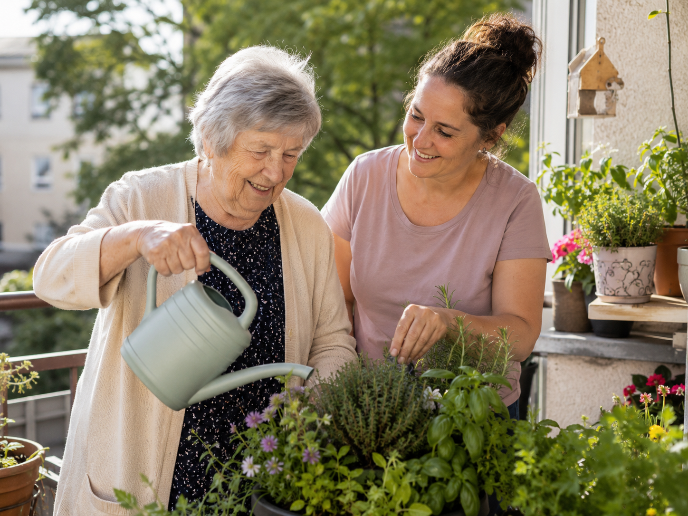

Unterstützung zuhause
Hilfe im vertrauten Umfeld und bei alltäglichen Aufgaben.
Unterstützung im Alltag – persönlich und zuverlässig
Zuhause gut begleitet
S-Line Seniorenhilfe UG hilft bei alltäglichen Aufgaben zuhause und in der Umgebung. Persönlich, ruhig und verlässlich.

Hilfe im vertrauten Umfeld und bei alltäglichen Aufgaben.
Mehr Ruhe und Zeit, wenn der Alltag Unterstützung braucht.
Persönliche Begleitung nach Bedürfnissen und Absprache.
Ruhige Unterstützung mit Zeit, Respekt und Vertrauen.
Ob zuhause, beim Einkauf oder bei kleinen Routinen: Wir sind da, wenn der Alltag leichter werden soll. Nah, menschlich und nach Absprache.
Alltagsnahe Unterstützung, die zu Ihrer Situation passt.
Begleitung bei vertrauten Routinen im eigenen Zuhause – ruhig, verlässlich und persönlich.
Gemeinsam planen, erinnern, sortieren und kleine Aufgaben angehen.
Gemeinsam einfache Speisen vorbereiten und vertraute Abläufe erhalten.
Gemeinsames Gießen, Beobachten und kleine Tätigkeiten im Grünen geben Orientierung und Tagesstruktur.
Falten, Ordnen oder Gestalten fördern Feinmotorik, Alltagskompetenz und das Gefühl, gebraucht zu werden.
Verlässliche Begleitung beim Einkauf, bei kleinen Besorgungen und zu vereinbarten Arztterminen.
Einfach, persönlich und gut abgestimmt.
Sie melden sich telefonisch, per E-Mail oder über das Formular.
Wir lernen Ihre Situation kennen und beantworten Ihre Fragen.
Wir stimmen gemeinsam ab, was wirklich hilft.
Die Unterstützung erfolgt ruhig, verlässlich und nach Absprache.
35,00 € pro Stunde
S-Line Seniorenhilfe UG ist in Eggersdorf ansässig und unterstützt Menschen im Landkreis Märkisch-Oderland und nach Absprache in der Umgebung.
Schreiben Sie kurz, wobei Unterstützung gewünscht ist. Wir melden uns persönlich zurück.